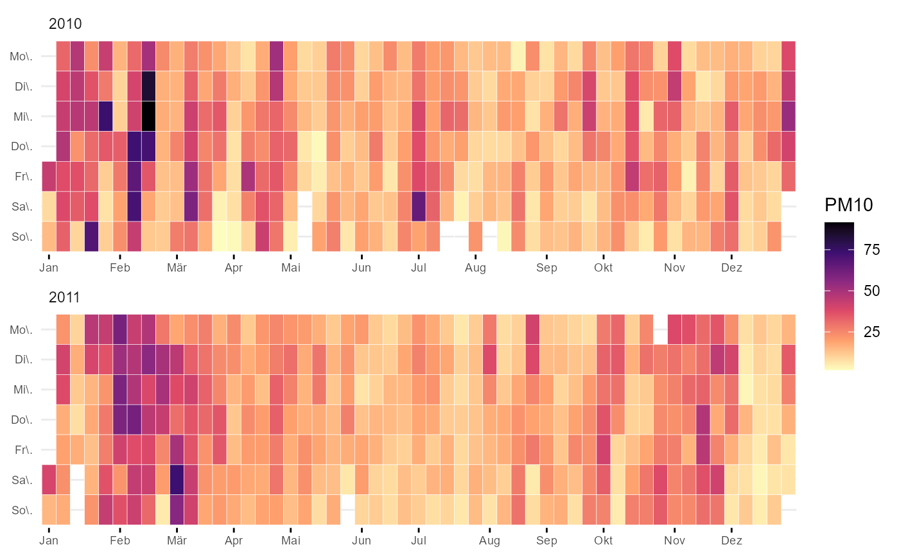

Just a geom_text with some defaults
ggcalendar(data, x = "date", z = "O3_max_h1", size = 0.1, color = "white", ..., locale = Sys.getlocale("LC_TIME")) cal_month_border(size = 0.5, lineend = "square", linejoin = "bevel", color = "grey5", ...) cal_label(mapping = NULL, stat = "identity", data = NULL, geom = "text", position = "identity", show.legend = FALSE, inherit.aes = TRUE, na.rm = TRUE, size = 2, color = "white", ...)
| data | input data |
|---|---|
| x | date column as Date, POSIXct or Character |
| z | value columns |
| size | parameter pssed on to |
| color | parameter pssed on to |
| ... | more options for |
| locale | locale string for |
| lineend | Line end style (round, butt, square). |
| linejoin | Line join style (round, mitre, bevel). |
| mapping | Set of aesthetic mappings created by |
| stat | The statistical transformation to use on the data for this layer, as a string. |
| geom | geom used for layer. "label" could be an alternative |
| position | Position adjustment, either as a string, or the result of a call to a position adjustment function. |
| show.legend | logical. Should this layer be included in the legends?
|
| inherit.aes | If |
| na.rm | If |
ggplot2 object
ggplot2 layer
ggplot2 layer
library(ggplot2) fn <- rOstluft.data::f("Zch_Stampfenbachstrasse_2010-2014.csv") df <- rOstluft::read_airmo_csv(fn) %>% rOstluft::resample(new_interval = "d1") %>% rOstluft::rolf_to_openair() ggcalendar(df, z = "PM10") + scale_fill_viridis_c(direction = -1, option = "magma", na.value = NA)#> Error: Breaks and labels are different lengths# can be customised... ggcalendar(df, z = "PM10") + scale_fill_viridis_c(direction = -1, option = "magma", na.value = NA) + cal_month_border(color = "white") + stat_filter(aes(filter = PM10 > 50), size = 0.75, color = "green", fill = NA, shape = 21) + cal_label(aes(label = round(PM10,0)))#> Error: Breaks and labels are different lengths